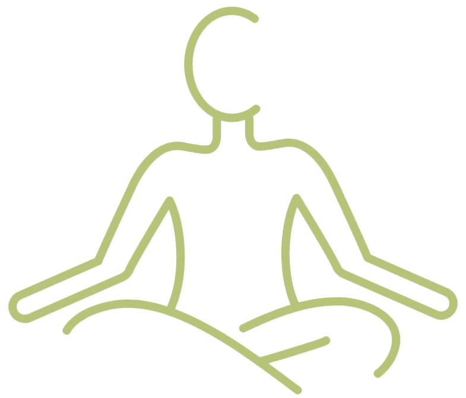

La réflexologie plantaire moderne occidentale est une technique manuelle douce pratiquée au niveau des pieds.
Des zones et points réflexes
Tout le corps est réprésenté sous nos pieds
Pour tous
La réflexologie plantaire s’adapte à tous, quel que soit l’âge et quelle que soit la pathologie*.

SES BIENFAITS
Cette technique naturelle de médecine alternative permet de :
- - retrouver de l’énergie
- - apporter une profonde détente et relaxation
- - renforcer le système immunitaire
- - soulager les douleurs et maux du quotidien
- - d’améliorer les troubles digestifs, circulatoires, uro-génitaux, musculaires ...
3 séances de réflexologie sont recommandées pour bien ancrer les résultats obtenus.
Prendre
RDV
*hors contre indication médicale et intervention chirurgicale récente
Les techniques de réflexologie ne peuvent pas se substituer à une consultation chez votre médecin
et il ne faut en aucun cas arrêter votre traitement médical sans l’avis de celui-ci.